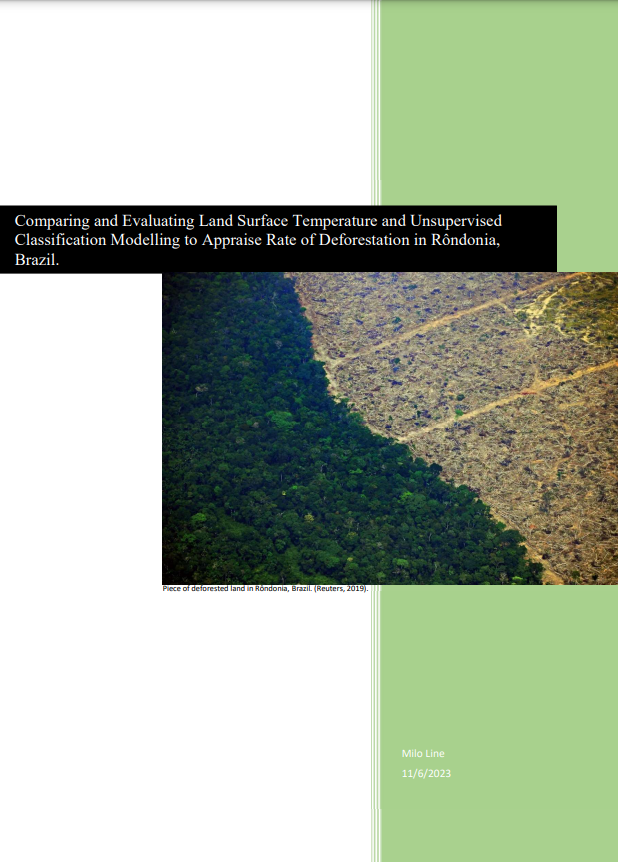

Report Writing
This report aimed to compare and evaluate the efficacy of land surface temperature as an indicator of deforestation in the Bom Fortuna national park located within the Brazilian Amazon rainforest. To write this report I utilised a number of advanced remote sensing techniques including phenology mapping, data analysis and unsupervised categorisation modelling. This report can be viewed throught this link.
Some other examples can be found at the following links:
This report aims to provide agronomic recommendations to a broad acre farm in WA.
This report outlines the historical context of the Spanish civil war (In Spanish).